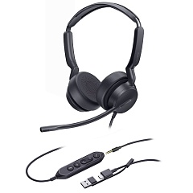

Yealink UH42 SE Dual UC USB-C/A
Цена носит информационный характер — актуальную стоимость и наличие уточняйте у менеджера.
Yealink UH42 — профессиональная проводная USB-гарнитура, которая отличается кристально чистым звуком и удобным форм-фактором, что позволяет использовать устройство с комфортом в течение всего рабочего дня. Она подходит для работы в различных офисных помещениях и обеспечивает полное погружение в работу.
Комфорт в течение всего дня
Yealink UH42 — это сверхлегкая и чрезвычайно удобная гарнитура, которая имеет оголовье из мягкой резины и амбушюры для комфортного использования в течение всего дня. UH42 позволяет поддерживать максимальную концентрацию внимания при работе как в офисе, так и дома. Гарнитура совместима с основными платформами унифицированных коммуникаций и прекрасно интегрируется с IP-телефонами Yealink.
Гибкая и быстрая система Plug&Play
Адаптер USB Type-C/A позволяет гибко подключаться к различным устройствам. Гарнитура совместима с основными телефонами и ПК, представленными на рынке, что позволяет пользователям приступить к работе сразу же после распаковки. Комбинированный аудио штекер 3,5 мм (до пульта управления).
Микрофон с шумоподавлением с ИИ
UH42 оснащена технологией Yealink Acoustic Shield, которая использует встроенный микрофон для автоматического подавления фонового шума и обеспечения четкой связи.
Высококачественный звук
Благодаря большим динамикам диаметром 35 мм гарнитура предоставляет объемный звук в режиме прослушивания музыки. UH42 поддерживает динамический эквалайзер, что позволяет автоматически переключаться между режимами голосового вызова или прослушивания музыки, обеспечивая чистое и естественное звучание звука в режиме разговора.
Гарантийный срок — 24 месяца.
Характеристики
Основные
- Длина кабеля гарнитуры: 1.2 м (от гарнитуры до пульта управления 3,5 мм)
- Длина кабеля USB: 0.95 м (от пульта управления до штекера USB)
- Поддерживаемые операционные системы: Microsoft Windows®, Apple Mac OS
- Тип подключения: кабель USB-C с переходником USB-A, комбинированный аудио штекер 3,5 мм (до пульта управления)
Аудио
- Количество микрофонов: 1
- Диапазон частотной характеристики микрофона: 100 Гц – 14 кГц
- Размер динамика: Ø 35 мм
- Чувствительность динамика: 113.8±3 дБ при 0.980 В
- Диапазон частотной характеристики динамика: 20 Гц – 20 кГц
- Импеданс динамика: 32±4.8 Ом, при 1.0 кГц
- Полоса пропускания динамика:
- Режим музыки: 20 Гц – 20 кГц
- Режим разговора: 100 Гц – 20 кГц
- Защита слуха:
- Защита от пиковых блокировок (EN50332)
- Австралийская защита G616 (AU G616)
- Защита от ежедневного воздействия шума
Управление и индикация
При использовании пульта управления:- Ответ/Завершение/Отклонение вызова
- Увеличение/Уменьшение громкости
- Включение/Выключение микрофона
- Следующий/Предыдущий трек
- Запуск ПО Voice Assistant по нажатию клавиши
Управление
- Приложение Yealink USB Connect
- Поддержка Yealink Management Cloud Service
Физические
- Вес: 158г
- Размер: 169x178x63 мм